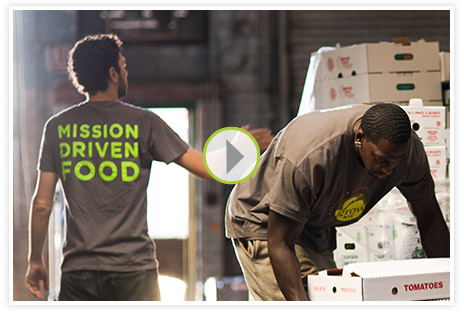
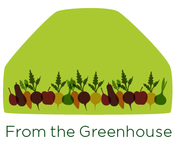
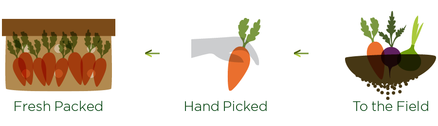
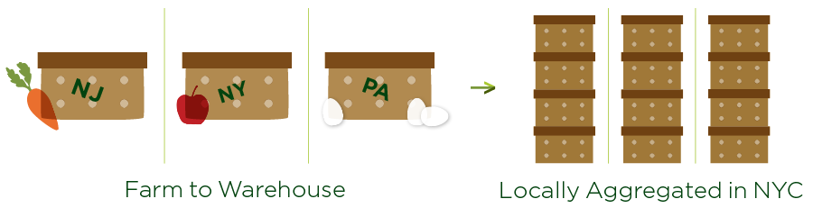
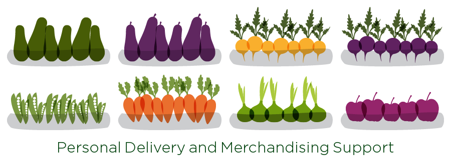
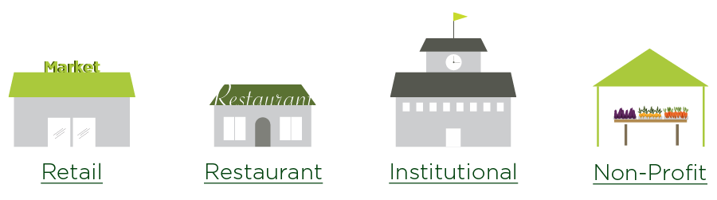
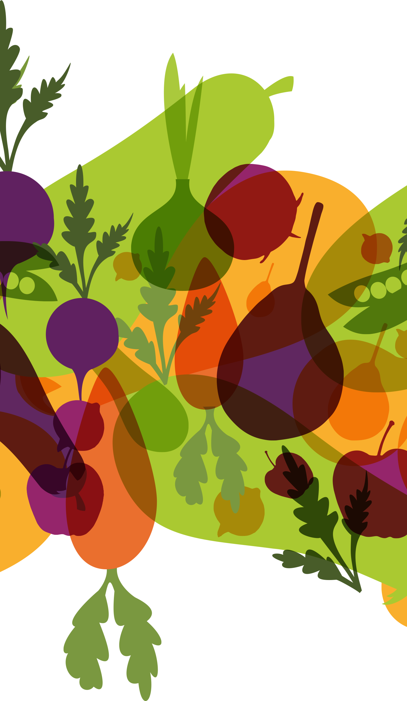

Our Mission
Providing all New Yorkers with fresh healthy local and affordable produce.
"Buy local" seems to be on everyone's lips and direct-to-consumer sales of agricultural products in the U.S. have increased dramatically in the past 10 years. However in spite of consumers' growing demand for locally, sustainably produced food, regional food systems often lack the infrastructure and support systems needed to move locally grown food in wholesale volumes to wholesale buyers such as food retailers, restaurants, and institutions.
 Read more about GrowNYC's successful retail Greenmarket farmers markets here.
Read more about GrowNYC's successful retail Greenmarket farmers markets here.
In response, in 2012 GrowNYC launched Greenmarket Co., New York City's first and only "food hub" dedicated to supporting regional food producers by making their products available to wholesale buyers throughout the city.
Enjoy it

Local Food
at Every Step
Successful food system operators are involved at all stages of a regional food system. This engagement allows unprecedented support to local farms and New York City buyers in the form of access to markets, Innovative partnerships, merchandising assistant, food access and consumer education.




